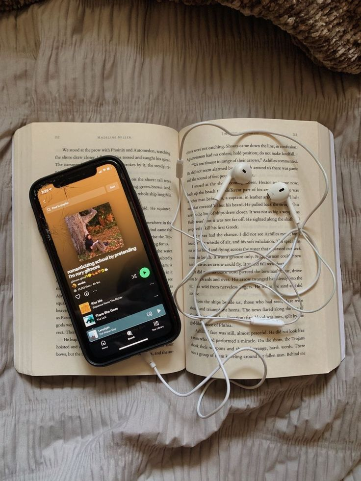
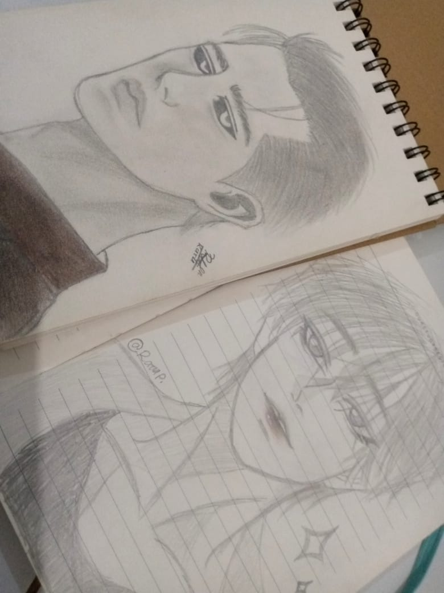
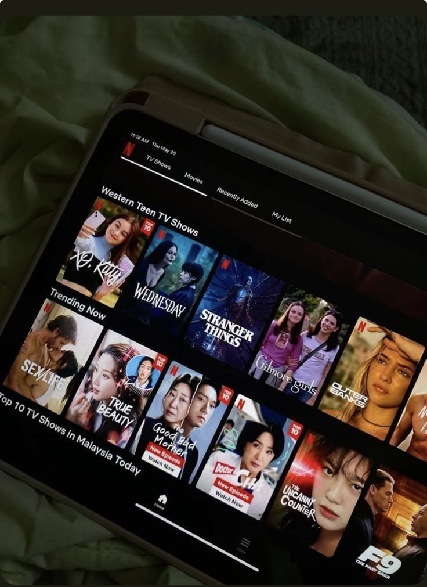
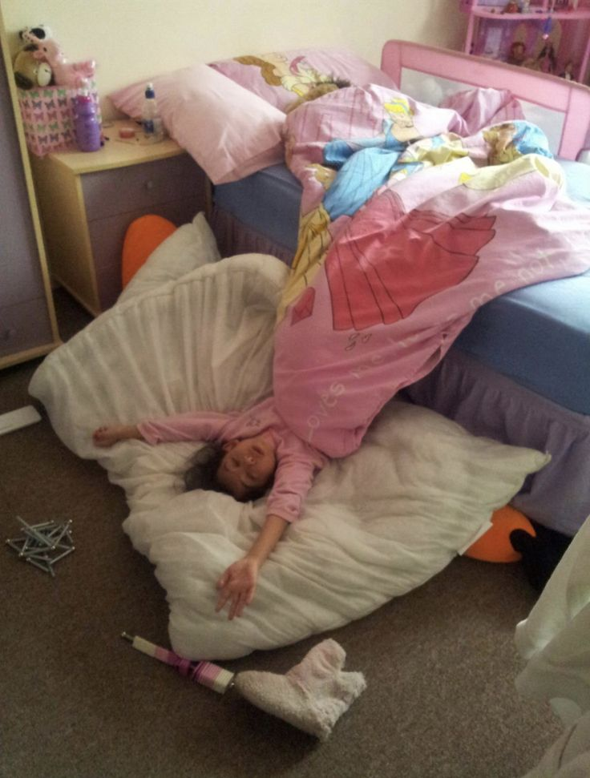
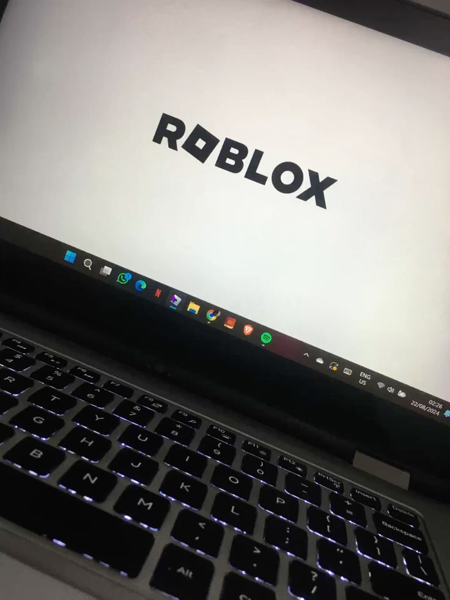
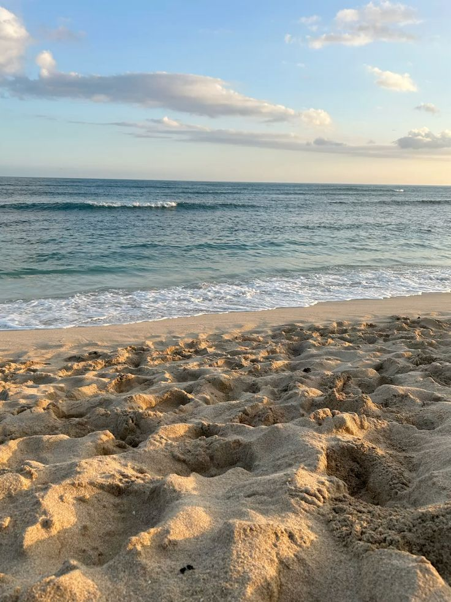

Halo, perkenalkan nama saya Ratu Prenita. Saat ini saya sedang menempuh pendidikan di Universitas Suryakancana,
Program Studi Teknik Informatika, dan telah menjalani tiga semester perkuliahan.
Saya merupakan pribadi yang cukup pemalu, terutama ketika berada di lingkungan baru. Namun,
ketika bersama orang-orang yang sudah dekat dengan saya, sisi ceria dan ekspresif saya akan lebih terlihat.
Saya juga memiliki ambisi dan tekad yang kuat dalam mengejar sesuatu yang saya inginkan. Bagi saya,
setiap proses adalah kesempatan untuk belajar, berkembang, dan menjadi pribadi yang lebih baik.
Pengalaman pertamaku memasuki dunia perkuliahan di semester 1 adalah ketika aku merasa bahwa semua orang di sekitarku begitu pintar. Aku mulai membandingkan diriku dengan mereka, merasa minder, dan berpikir bahwa kemampuanku tidak sebaik mereka. Aku merasa tertinggal dan kesulitan untuk menyamai pencapaian teman-temanku.
Namun, ketika memasuki semester 2, aku mulai membuktikan kepada diriku sendiri bahwa aku juga mampu berkembang. Aku berusaha lebih fokus belajar, memahami materi perkuliahan dengan lebih baik, dan tidak lagi hanya diam ketika merasa tertinggal. Hasilnya, aku berhasil meningkatkan IPK dan memperoleh nilai yang jauh lebih baik dibandingkan semester sebelumnya. Aku sangat bersyukur atas pencapaian itu karena menjadi bukti bahwa usahaku tidak sia-sia.
Dari pengalaman tersebut, aku belajar bahwa ketika merasa tertinggal dari orang lain, aku tidak seharusnya terus-menerus membandingkan diri atau meragukan kemampuanku. Aku perlu berusaha, belajar, dan mengambil langkah untuk berkembang. Sebab, selama orang lain terus maju, aku pun memiliki kesempatan untuk melakukan hal yang sama. Aku tidak harus menjadi lebih baik dari orang lain, tetapi aku ingin terus menjadi lebih baik dari diriku yang sebelumnya.

Mendengarkan Musik

Gambar

Menonton Film

Tidur

Main Game

Pantai